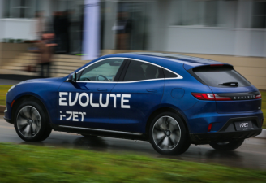

Изготовленный Зурабом Церетели памятник Тихону Хренникову открыли в Ельце
Новая достопримечательность появилась в Ельце. Здесь открыли памятник
композитору Тихону
Хренникову. В этом году исполняется 110 лет со дня его рождения. Двухтонная скульптура полностью из бронзы.
Её создал народный художник СССР и России, президент Российской академии художеств Зураб Церетели.
Это первая его работа, установленная в Липецкой области.
Изготовленный Зурабом Церетели памятник Тихону Хренникову открыли в Ельце
Новая достопримечательность появилась в Ельце. Здесь открыли памятник
композитору Тихону
Хренникову. В этом году исполняется 110 лет со дня его рождения. Двухтонная скульптура полностью из бронзы.
Её создал народный художник СССР и России, президент Российской академии художеств Зураб Церетели.
Это первая его работа, установленная в Липецкой области.
 Липецк признан беговой столицей России 2023 года
Липецк признан беговой столицей России 2023 года по итогам
полумарафона «Забег.рф». В Липецке было 4000 участников забега, которые показали лучший результат в России,
набрав 29,34 итоговых зачетных балла. Данный показатель высчитывался исходя из следующих показателей:
средней дистанции, преодоленной всеми участниками субъекта, соотношению участников «Забега.рф» к его
населению, а также по средней скорости бега. На втором месте оказался Магадан, он набрал 27,45 балла, на
третьем — Санкт-Петербург, у него 21,55 балла
Липецк признан беговой столицей России 2023 года
Липецк признан беговой столицей России 2023 года по итогам
полумарафона «Забег.рф». В Липецке было 4000 участников забега, которые показали лучший результат в России,
набрав 29,34 итоговых зачетных балла. Данный показатель высчитывался исходя из следующих показателей:
средней дистанции, преодоленной всеми участниками субъекта, соотношению участников «Забега.рф» к его
населению, а также по средней скорости бега. На втором месте оказался Магадан, он набрал 27,45 балла, на
третьем — Санкт-Петербург, у него 21,55 балла

Электрокар EVOLUTE из Липецкой области признан электромобильным брендом № 1 в России
Электрокар под маркой EVOLUTE вновь подтвердил звание «Электромобиля
№ 1» в России по результатам мая 2023 года. На регистрационный учёт в минувшем месяце встало 167 таких
электрокаров, что превысило 21% всех регистраций в сегменте электрического транспорта.
 Игорь Артамонов посетил белгородцев в липецком пункте временного размещения
Губернатор Липецкой области Игорь Артамонов, как и обещал ранее,
посетил пункт временного размещения, в котором сейчас находятся жители Шебекинского района Белгородской
области. В основном это семьи с детьми. Им предоставлены номера гостиничного типа.
Игорь Артамонов посетил белгородцев в липецком пункте временного размещения
Губернатор Липецкой области Игорь Артамонов, как и обещал ранее,
посетил пункт временного размещения, в котором сейчас находятся жители Шебекинского района Белгородской
области. В основном это семьи с детьми. Им предоставлены номера гостиничного типа.